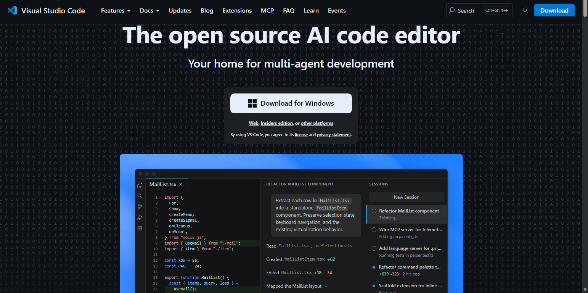
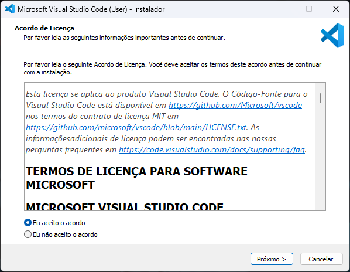
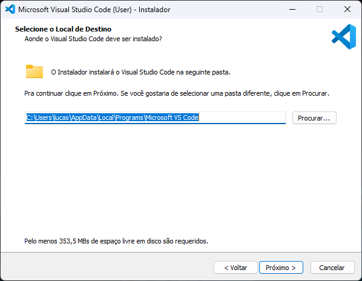
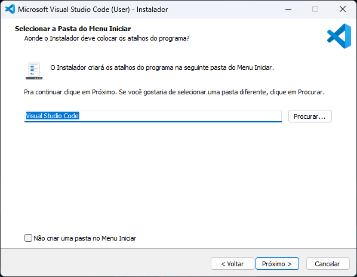
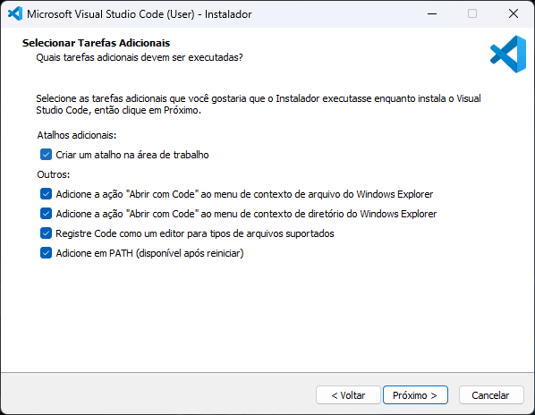
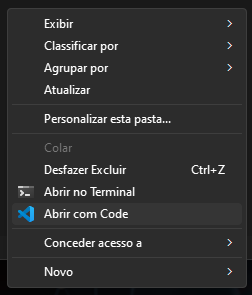
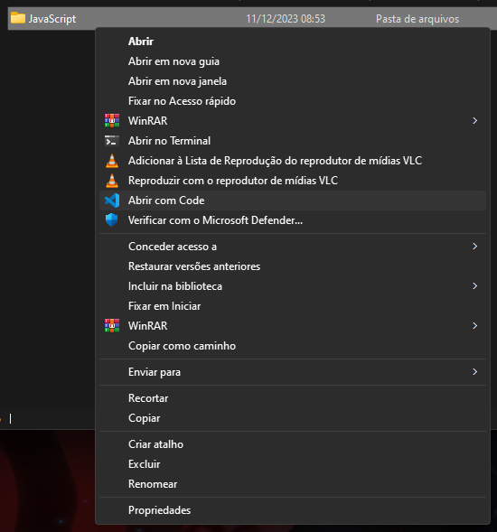
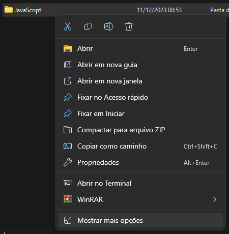
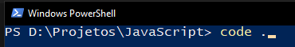

Por que instalar o VS Code?
O Visual Studio Code e uma das IDEs, ou ambientes de desenvolvimento integrado, mais populares do mercado.
Essa ferramenta e multiplataforma, estando disponivel para Windows, Linux e MacOS, e pode ser adaptada para diferentes necessidades por meio da instalacao de extensoes.
Neste material, o foco e preparar o ambiente para trabalhar com o GitHub Copilot de forma simples e organizada.
Baixar o instalador oficial
Para iniciar a instalacao, acesse code.visualstudio.com e clique no botao de download para Windows.

Executar o instalador
Apos baixar, abra o instalador com dois cliques. Na primeira tela, aceite os termos e clique em proximo.

Voce pode escolher o local de preferencia ou manter a pasta sugerida pelo instalador.

Atalhos e tarefas adicionais
A criacao do atalho do VS Code no Menu Iniciar fica a seu criterio. Manter a opcao padrao costuma ser suficiente.

Esta etapa facilita bastante o uso diario: crie atalho na area de trabalho, habilite Abrir com Code nos menus de contexto, registre o Code como editor e adicione ao PATH.

Testar se a instalacao funcionou
Com o VS Code instalado, clique com o botao direito em uma pasta ou em uma area vazia dentro dela. A opcao para abrir com o Code deve aparecer no menu de contexto.

Voce tambem pode selecionar uma pasta especifica e clicar com o botao direito do mouse nela.


Testar o comando code ponto
Para testar se o VS Code foi adicionado ao PATH corretamente, abra o terminal na pasta desejada e execute:
code .

Ao usar esse comando, a pasta para onde o terminal esta apontando sera aberta no VS Code. Se isso funcionar, a instalacao foi concluida com sucesso.
Proximos passos
Depois da instalacao, voce pode personalizar o VS Code com extensoes, temas e ajustes de preferencias conforme sua rotina de trabalho.
Para Linux e MacOS, consulte a documentacao oficial, pois os passos podem variar conforme a distribuicao ou versao do sistema.